Introduction
First of all THANK YOU for purchasing the script.
Triangle is a social network tool that helps you manage and schedule your post in all of your social network profiles.
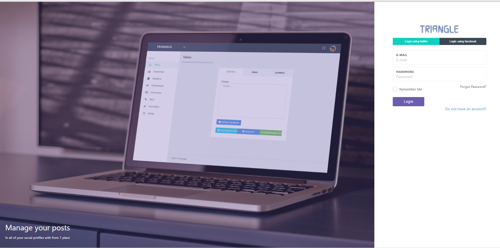 # A picture from the home screenRequirements
What do you need in order to install Triangle?
Well, Triangle is a Laravel web application so it has the same requirements as the Laravel PHP Framework.
- Apache Web Server
- MySQL Database
- PHP Version >= 5.5.9s
- OpenSSL PHP Extensions (Most of the web servers have it)
- PDO PHP Extensions (Most of the web servers have it)
- Mbstring PHP Extensions (Most of the web servers have it)
- Tokenizer PHP Extensions (Most of the web servers have it)
Used Technologies
- Laravel PHP Framework
- Jquery JS Framework
- Bootstrap CSS Framework
- Jquery UI
- Morris Tables
- Others...
Installation
Having an SSH access to your web server will be an advantage.
1. Extract the .zip archive and go to the project root folder
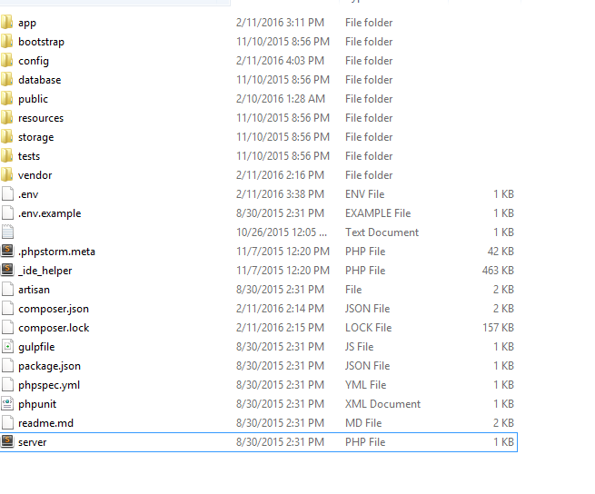2. Open the .ENV file using any text editor
You can see 3 sectiopn

Database
- DB_USERNAME = Name of the mysql user
- DB_PASSWORD = Password of the mysql user
- DB_DATABASE = Name of the mysql database you created
After that just import the "triangle.sql" file (you can find it in the project root folder")
Mailing Server Setup
In order to set-up the mail server you need to make an app HERE
- MAILGUN_DOMAIN = The mailgun app domain
- MAILGUN_SECRET = The secret mailgun api key
Facebook, Twitter, LinkedIn APIs Keys
1.Go to FACEBOOK DEVELOPERS and create a new application

2.When you create it the dashboard of your application will look like this
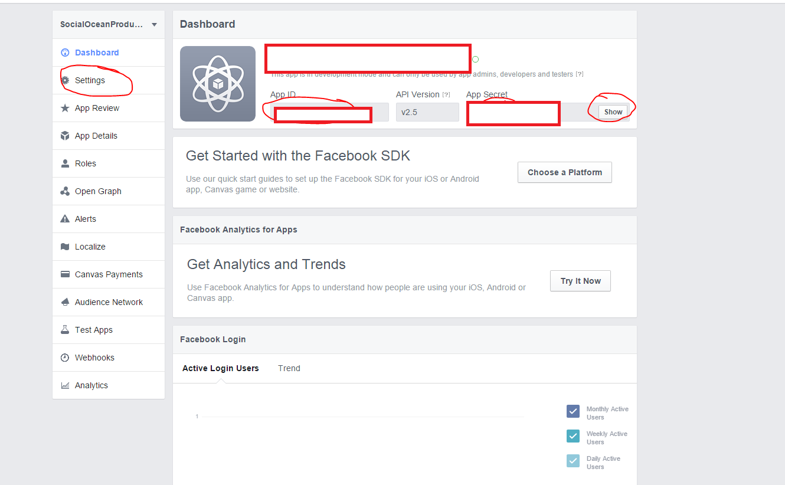3.Then copy the Facebook APP Id and Facebook App Secret And Paste It In the .env file (FACEBOOK_APP_ID,FACEBOOK_APP_SECRET)
4.Then go to Settings page in Facebook Developers (Shown above) and Enter your e-mail (Contact E-mail Section), the URL of your application (App Domains), and click Add Platform (Website) -> enter again the URL of your application
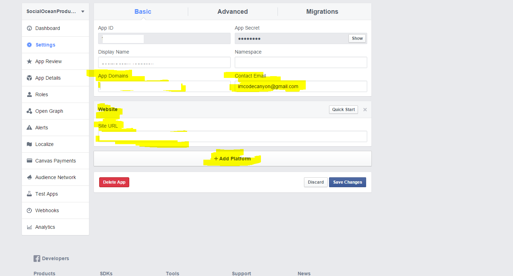5. Go to App Review and make your application public, then go to "Items in review" and click "add items to this submission" -> make a submission for the following permissions -> 'manage_pages', 'user_events', 'publish_actions', 'user_managed_groups', 'publish_pages'
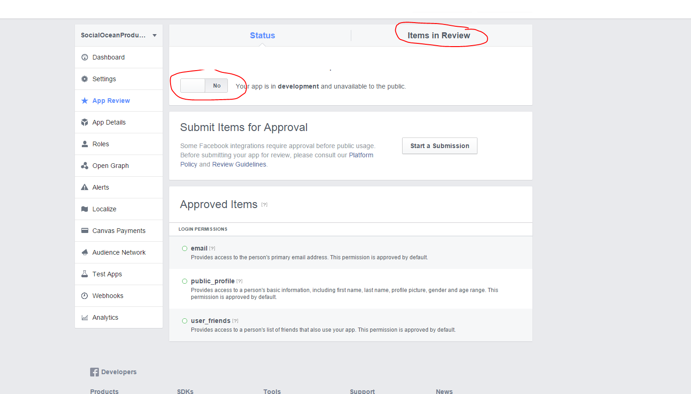Go to LinkedIn Developers Page and create a new application
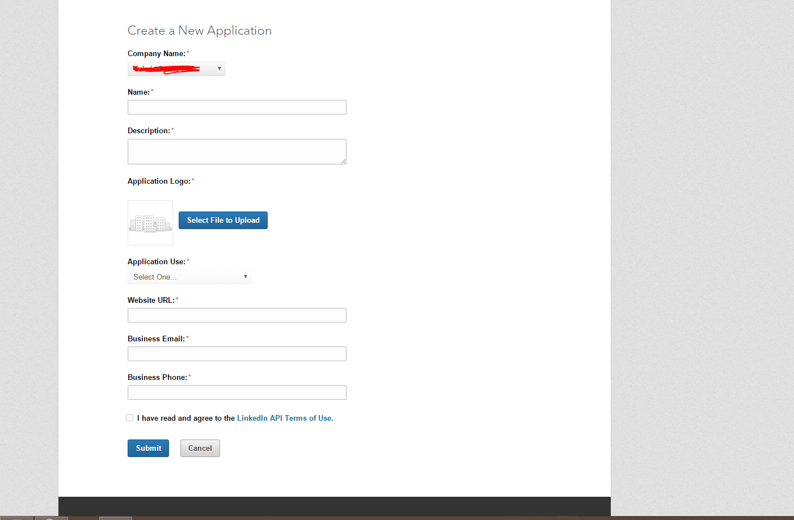After that go to your application's page and check all Permissions checkboxes and add these 2 URL (your applicaiton URL + "/app/dashboard" and "/app/connect/linkedin"). For example - if your application domain is http://Trianglescript.com, you need to enter http://Trianglescript.com/app/dashboard, and http://Trianglescript.com/app/connect/linkedin below Authorized Redirect URLs (shown below):
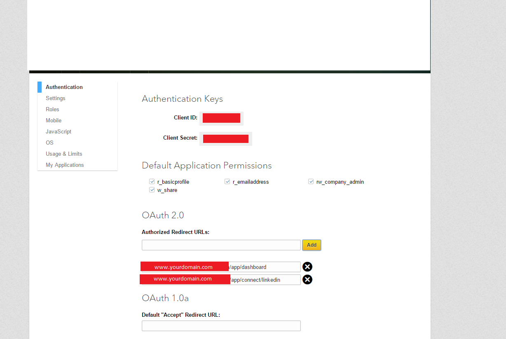Copy the Client ID and Client Secret and put it into your .env file (LINKEDIN_CLIENT_ID,LINKEDIN_CLIENT_SECRET)
Go to Twitter Developers Page and create a new application
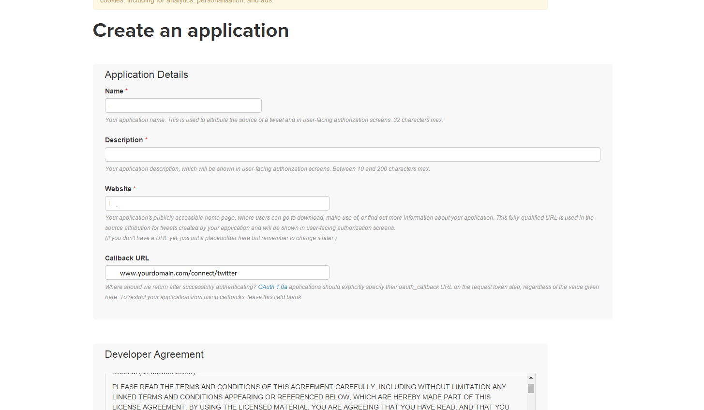On Callback URL ( Enter app url + "/connect/twitter")
After that copy (Consumer Key, Consumer Secret) and put it into your .env file (TWITTER_CLIENT_ID,TWITTER_CLIENT_SECRET)
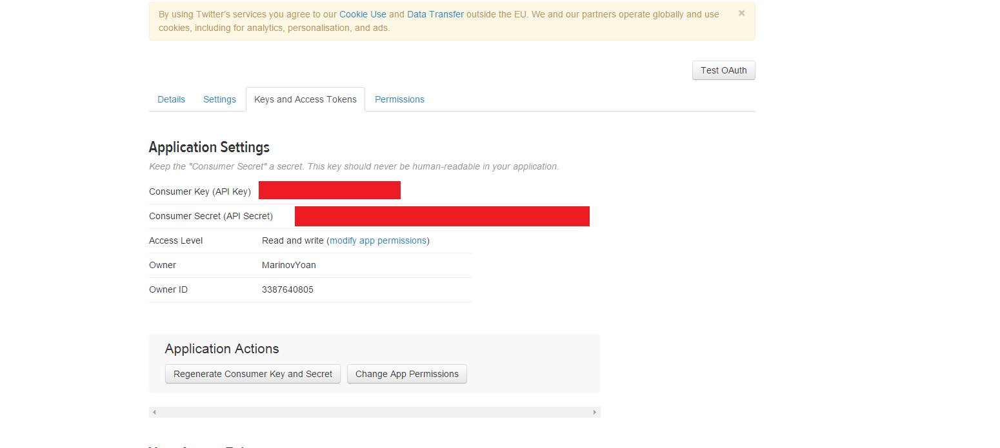SetUp Cronjob & Real-Time Sockets
Sockets
You need to start the sockets using this command "php artisan sockets:start" in order to have all the real-time notifications working. And you need to put this running in the background.
CronJob on linux
Open the terminal and type
crontab -ethen add this line at the bottom (You need CURL package for this, you can install it by typing
sudo apt-get install curlc) * * * * * php /path/to/artisan schedule:run >> /dev/null 2>&1
Application Guide
After you login you will be redirected to the dashboard
Dashboard
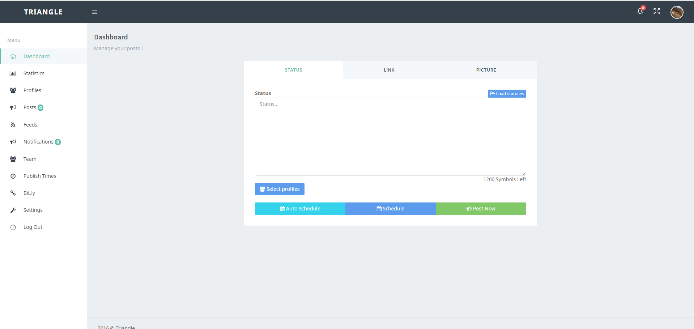 Connected ProfilesYou can post / schedule your posts from the dashboard.
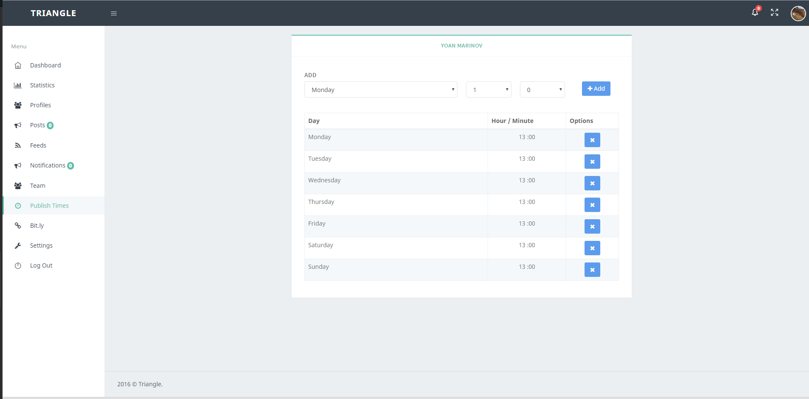 publish timespublish times when the post will be scheduled when you click "Schedule in the future" and if this time is taken the post will be schedule for the next available one. On the picture above you can see the publish times for my Facebook profile (Monday 13:00, Tuesday 13:00, Wedne...) When I activate my FB profile and click "schedule in the future" if there is no post for Monday at 13:00, it will schedule it for Monday at 13:00 otherwise it will schedule it for Tuesday.
Connect Profile 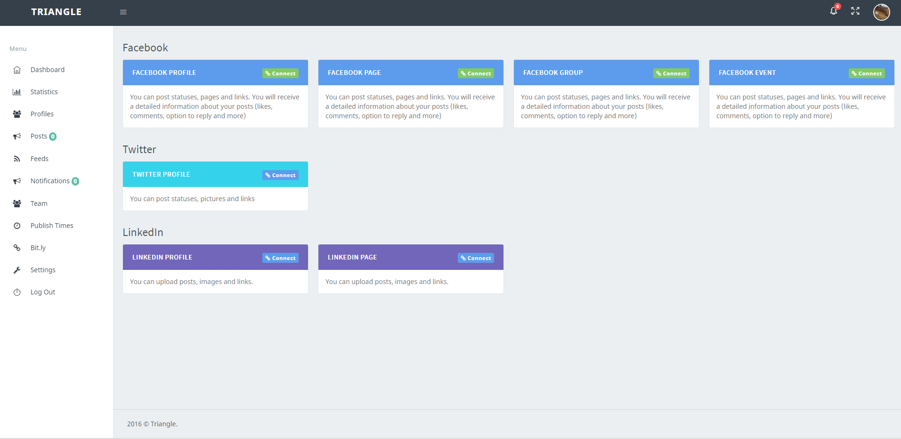 TeamYou can invite people to your team. You just need to enter their e-mail and send the request. If the user is registered, he/she will receive real-time notifications, if not an e-mail will be sent to him/her.
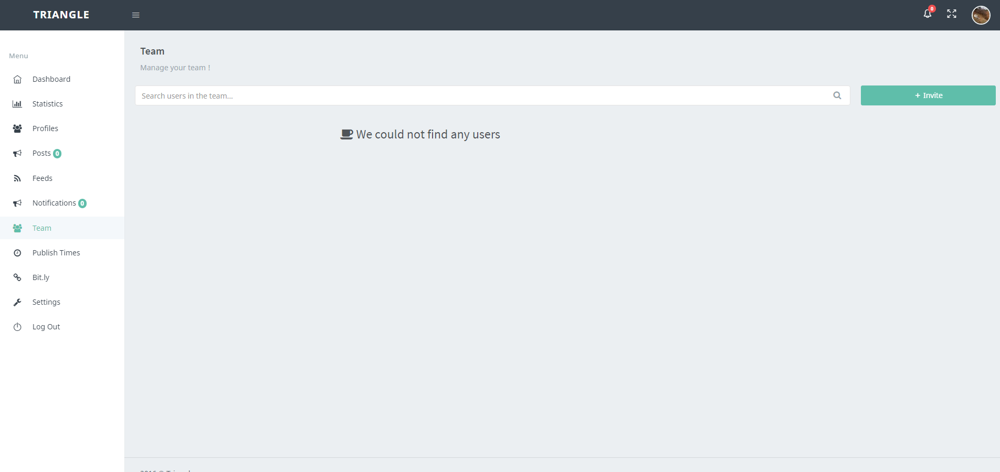 PostsYou can see your posts here, see comments, likes and answer to them, you can also delete the post
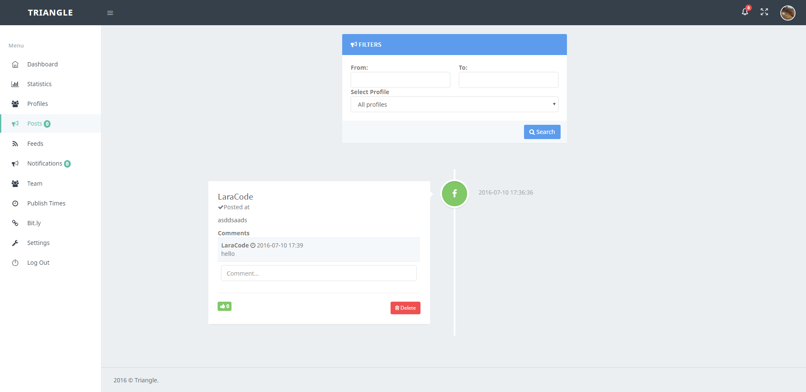Translations
You can access the translations on your_domain.com/admin/translations
Adding a new language
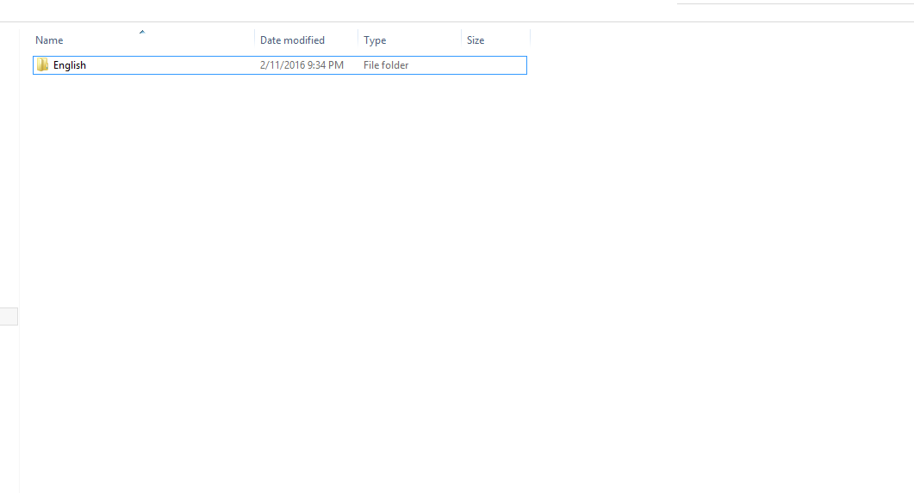Go to project_root/resources/lang and copy the "English" folder and rename it.
Then go to the Translations section in the ADMIN PANEL and click Import Groups button.
Translating
Go to the Translations section in the ADMIN PANEL and Choose a group, then edit the translations you want and click Publish Translations
Admin Panel
You can access the admin panel athttp://your_domain.com/admin/login
LOGIN CREDENTIALS
E-MAIL: triangle@admin.com PASSWORD: $trianglepass$Contact Me
- SKYPE: berkossa_ankossa
- E-MAIL: imcodecanyon@gmail.com